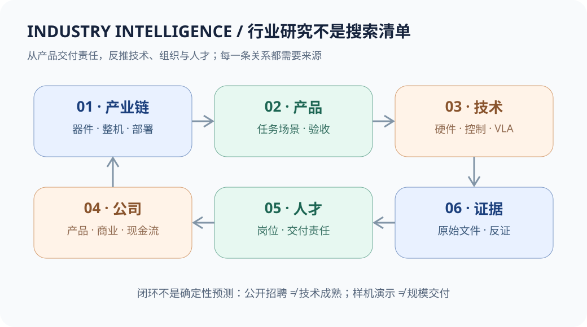

结论先行从“岗位名称”逆向研究“产品要达成的成果”，再串起技术、公司、证据和人才，比只囤报告或只搜人名更容易形成可修订的专业判断。
01 · 为什么直接按 JD 搜人会误判
职位名称不是工作的技术定义。“研发总监”可能负责关节驱动、整机控制、具身模型、生产可靠性或量产平台；相同头衔在各公司可能对应完全不同的交付责任。正确起点应是倒推：产品要完成哪些场景任务、失败成本由谁承担、哪些指标必须验收，再定位人才。
可向客户核实：管多少人？交付单机样机还是量产可靠性？考核是系统轨迹精度、操作成功率、BOM 降本还是工厂 OEE？拥有算法决策权，还是仅负责把算法集成到硬件？职位画像越具体，错误候选人越少。
02 · 从六个研究问题到证据等级
原材料提出六个维度：产业链、产品、技术、头部及新锐企业、岗位和未来趋势。这是检索框架，不是完成研究的证明。每个维度都应该附上可追溯事实与尚未证实的假设。
| 材料级别 | 适合回答 | 主要风险 |
|---|---|---|
| 监管公告、年报及招股书 | 财务口径、产品分部、股权与关联交易 | 管理层表述和可比口径仍需辨析 |
| 论文、开源代码与公开基准 | 算法机制、可复现性能、研究边界 | 实验环境与现实部署差异 |
| 官网技术手册与产品文档 | 接口、自由度、硬件架构与版本 | 公司自述不等于独立测评 |
| 券商报告、媒体、访谈 | 线索、竞争格局、潜在变量 | 转述链、利益关系与预测不确定性 |
| 招聘 JD 与社交履历 | 组织需求线索、技能关键词 | 可能过期、虚挂、重复招聘，涉及隐私 |
03 · 人形机器人知识地图：六个相互连接的层

产业链从器件供应延伸到机器人整机、软件平台和现场交付；技术层从电机控制、运动规划到强化学习与视觉语言动作模型。[S2] 同一个环节既可能由公司自研，也可能向外采购，因此“供应链企业”和“整机厂”不是可互斥的名单。
建议记录边的语义：供应、竞争、合作、并购、招聘、技术引用；每条边记录来源 URL、首次观察时间和最后确认时间，而不是只存一张静态公司关系图。
04 · 四家公司：比较技术问题，而非笼统排座次
以下仅为代表性样本，属于依据公开资料提出的研究起点，不是技术排名或完整企业目录。
| 公司 | 公开产品／资料入口 | 适合追问的组织能力 | 待独立核验 |
|---|---|---|---|
| 优必选 | Walker 系列，港交所财报 [S1] | 工业应用集成、商业分部与生产部署 | 稳定运行时长、客户验收、收入确认 |
| 宇树科技 | H1 系列官网 [S3] | 整机运动控制、硬件集成、产品化 | 不同场景中的实际成功率 |
| 傅利叶智能 | GR-2 官方文档 [S4] | 执行器、机构与开发平台 | 规模交付与任务重复性 |
| 智元机器人 | 远征系列产品页 [S5] | 关节执行、灵巧手、模型和系统协同 | 多场景部署的独立运行数据 |
反证：优必选2025年财报披露总营收20.01亿元，报告期亏损7.898亿元；其全尺寸具身智能人形机器人相关收入8.206亿元。业务增长与已实现盈利是两件不同的事，也不能从单家公司财报推定行业统一市场份额。[S1]
05 · 技术岗位为什么必须进一步拆分
算法总监至少需区分运动学／动力学控制、强化学习、视觉感知、视觉语言动作（VLA）模型、数据采集与工程部署。RT-2 是 VLA 的代表性研究范例，展示了把视觉和语言表征迁移为机器人动作的路径；但论文研究中的实验设置，不能直接替代工厂现场的可靠性测试。[S2]
| 岗位簇 | 可问的具体能力 | 可核验成果 |
|---|---|---|
| 关节/伺服/结构 | 驱动、热管理、齿轮和结构强度 | 寿命、温升、维护和成本数据 |
| 运动控制 | 状态估计、MPC、平衡和轨迹跟踪 | 扰动恢复、跌倒、故障覆盖率 |
| 感知与操作 | 抓取、位姿、触觉与标定 | 跨物品成功率、失败分类 |
| 具身模型 | 数据混合、模仿/强化学习、VLA | 未见场景测试、消融与误差分析 |
| 部署/质量 | 测试系统、远程诊断、售后和安全 | 可用率、MTBF、全生命周期成本 |
06 · 人才地图：从个人名单改为职责网络
公开招聘信息最多说明企业公开表达了某种用人需求，不能自动证明它已经掌握相应技术。建立人才地图时，先记岗位簇、部门、公开的职务和公开可验证的论文／专利／项目，再由候选人自主授权后处理简历、联系方式等个人信息。
一个可维护记录至少包含：公司、岗位名称、技术标签、招聘发布时间、原始 URL、存续状态、适用城市、核验日期、证据等级。把“正在招聘 VLA”进一步核验成“已经开发出成熟 VLA 商用产品”是典型逻辑跳跃。
07 · 一个可执行的研究冲刺
- 先限定任务：将模糊的“人形机器人研发总监”转译为交付成果、场景和系统边界。
- 建立最小图谱：梳理 6 层 ontology，至少为每个重要节点保存来源。
- 挑选对照组：选两类业务积累较深公司、两类新锐方向公司，避免只选热搜公司。
- 核对事实：下载官方财报、技术手册、源论文，建立 claim–source 表。
- 做反证：遥操与自主、demo 与交付、合同额与确认收入、招聘计划与人员到岗分别判断。
- 交付备忘录：给出岗位技能矩阵、候选组织类型、可信结论和下一轮问题。
检查一张公司卡是否合格
是否记录报告期？收入是否区分整机、方案和服务？能否找到公开产品参数？测试是否有重复次数？商业规模是订单、交付还是收入确认？个人资料是否有合法处理依据？每项“未知”是否保留为未知？
08 · 结论、反证与边界
行业研究的最终产物不是报告数量，而是能否把“这家公司做什么”推进为“其技术瓶颈为何、怎样证实、对应什么关键人才”。
反证：一家公司即便持续招聘控制算法工程师，也可能只是人才储备、人才流失补缺或试探方向；技术发布也可能只在受控条件下成功。预测未来3—5年产业规模之前，应先指定出货/装机/验收的统计口径。
未完成：本轮未穷尽企业、没有核对所有实时招聘、未获取个人授权的人才档案，也没有开展跨公司统一口径性能测试。因此研究状态是部分核验，不宣称形成完备人才数据库。
参考资料与查证路径
- [S1] 香港交易所／优必选，优必选2025年度业绩公告（2026-03-31）；原始来源，定位：第1页财务概要。
- [S2] Proceedings of Machine Learning Research，RT-2: Vision-Language-Action Models Transfer Web Knowledge to Robotic Control（2023-11）；原始来源，定位：摘要、方法及实验。
- [S3] 宇树科技，Unitree H1 / H1-2 product page（网站持续更新）；原始来源，定位：公开产品说明。
- [S4] 傅利叶智能，GR-2 Introduction（网站持续更新）；原始来源，定位：公开技术文档。
- [S5] 智元机器人，智元远征A1产品介绍（网站持续更新）；原始来源，定位：官网产品规格与技术描述。
- [S6] 优必选，Company Profile（网站持续更新）；原始来源，定位：官网工业应用产品说明。